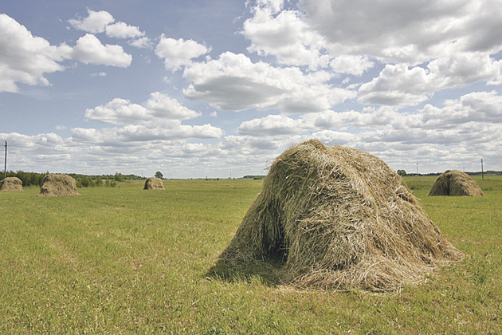

Šienas - vertimai, sinonimai, gramatika, statistika - dictionaries24.com
 Nav Dictionaries24 .com D 24 Nemokamas žodynas Žodžių sąrašas Apie žodyną Nuorodos EN ES DE FR IT PT NL RU NO SE FI DK CZ PL HU TR GR UK AL BG BY EE HR IS LV MK RO SI SK Nemokamas žodynas Žodžių sąrašas ŠienasŽodis: šienas
Susiję žodžiai: šienas
šienas rulonuose, šienas graužikams, šienas biokurui, šienas kitkomis, šienas kaina, šienas pardavimui, šienas parduodu, šienas parduoda, šienas triušiams, šienas rulonaisSinonimai : šienas
šienasVertimai : šienas
Žodynas anglų Vertimai hay šienas angliškaiŽodynas ispanų Vertimai heno šienas ispaniškai
Žodynas vokiečių Vertimai heu šienas vokiškai
Žodynas prancūzų Vertimai foin šienas prancūziškai
Žodynas italų Vertimai fieno šienas itališkai
Žodynas portugalų Vertimai falcão, feno šienas portugališkai
Žodynas olandų Vertimai hooi šienas olandiškai
Žodynas rusų Vertimai награда, сено šienas rusiškai
Žodynas norvegų Vertimai høy šienas norvegiškai
Žodynas švedų Vertimai hö, Hay, Höutrustning, Foder, höet šienas švediškai
Žodynas suomių Vertimai ruoho, heinä, heinät, heinänkorsi šienas suomiškai
Žodynas danų Vertimai hø šienas daniškai
Žodynas čekų Vertimai seno šienas čekiškai
Žodynas lenkų Vertimai siano šienas lenkiškai
Žodynas vengrų Vertimai körtánc, széna šienas vengriškai
Žodynas turkų Vertimai saman šienas turkiškai
Žodynas graikų Vertimai σανός šienas graikiškai
Žodynas ukrainiečių Vertimai сіно šienas ukrainietiškai
Žodynas albanų Vertimai sanë, bari, hay, nga bari, sana šienas albaniškai
Žodynas bulgarų Vertimai сено šienas bulgariškai
Žodynas baltarusių Vertimai сена šienas baltarusiškai
Žodynas estų Vertimai hein šienas estiškai
Žodynas kroatų Vertimai sijeno šienas kroatiškai
Žodynas islandų Vertimai hey šienas islandiškai
Žodynas lotynų Vertimai fenum šienas lotyniškai
Žodynas latvių Vertimai siens šienas latviškai
Žodynas makedonų Vertimai сено, сеното, поленска, детелина šienas makedoniškai
Žodynas rumunų Vertimai fân šienas rumuniškai
Žodynas slovėnų Vertimai seno šienas slovėniškai
Žodynas slovakų Vertimai seno šienas slovakiškai
Atsitiktiniai žodžiai
šiaurė šikšnosparnis vertimai scena apibūdinti miežis gramatika celibatas gramatika atradimas nervas sinonimai skyrius gramatika priešingybė kiemas vertimai akiniai vertimai grindinys angliškai princas angliškai patentas angliškai programavimas angliškai pietinis angliškai mikrobas angliškai atpildas angliškai skrandis angliškaiDictionaries24.com - Išbandykite mūsų žodyną ir pamatykite kaip paprasta juo naudotis.